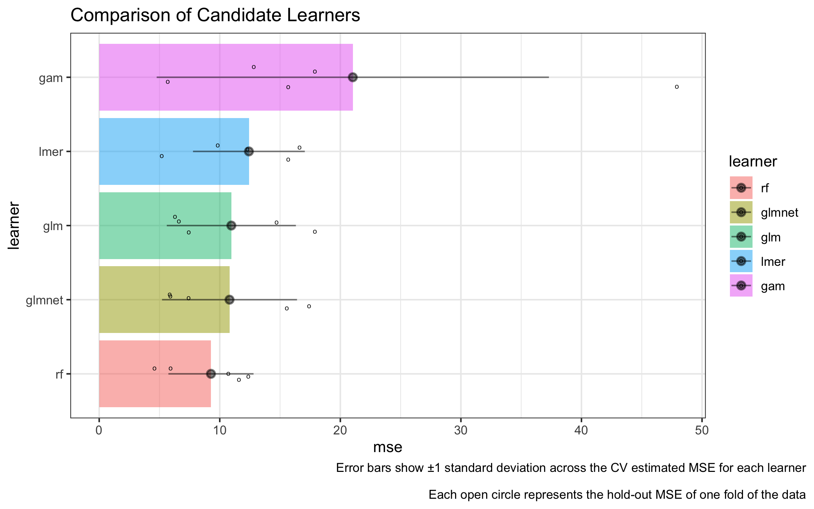
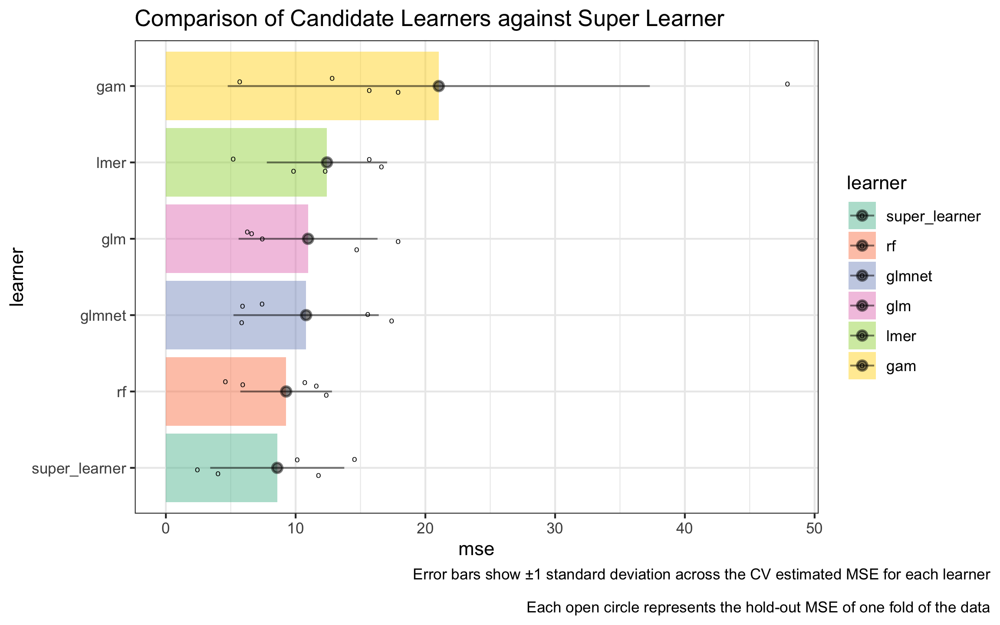

nadir (noun): nā-dir
the lowest point.
Fitting with the minimum loss based estimation12 literature, nadir is an implementation of the Super Learner algorithm with improved support for flexible formula based syntax and which is fond of functional programming techniques such as closures, currying, and function factories.
nadir implements the Super Learner3 algorithm. To quote the Guide to SuperLearner4:
SuperLearner is an algorithm that uses cross-validation to estimate the performance of multiple machine learning models, or the same model with different settings. It then creates an optimal weighted average of those models, aka an “ensemble”, using the test data performance. This approach has been proven to be asymptotically as accurate as the best possible prediction algorithm that is tested.
Why {nadir} and why reimplement Super Learner again?
In previous implementations ({SuperLearner}, {sl3}, {mlr3superlearner}), support for flexible formula-based syntax has been limited, instead opting for specifying learners as models on an matrix and outcome vector. Many popular R packages such as lme4 and mgcv (for random effects and generalized additive models) use formulas extensively to specify models using syntax like (age | strata) to specify random effects on age by strata, or s(age, income) to specify a smoothing term on age and income simultaneously.
At present, it is difficult to use these kinds of features in SuperLearner, sl3 and {ml3superlearner}.
For example, it is easy to imagine the Super Learner algorithm being appealing to modelers fond of random effects based models because they may want to hedge on the exact nature of the random effects models, not sure if random intercepts are enough or if random slopes should be included, etc., and similar other modeling decisions in other frameworks.
Therefore, the nadir package takes as its charges to:
- Implement a syntax in which it is easy to specify different formulas for each of many candidate learners.
- To make it easy to pass new learners to the Super Learner algorithm.
Installation Instructions
At present, nadir is only available on GitHub.
devtools::install_github("ctesta01/nadir")Warning: this package is currently under active development and may be wrong! Do not use this for serious applications until this message has been removed, likely at the time of a future release.
Demonstration
First, let’s start with the simplest possible use case of nadir::super_learner(), which is where the user would like to feed in data, a specification for some regression formula(s), specify a library of learners, and get back a prediction function that is suitable for plugging into downstream analyses, like in Targeted Learning or for pure-prediction applications.
Here is a demo of an extremely simple application of using nadir::super_learner:
library(nadir)
# we'll use a few basic learners
learners <- list(
glm = lnr_glm,
rf = lnr_rf,
glmnet = lnr_glmnet
)
# more learners are available, see ?learners
sl_model <- super_learner(
data = mtcars,
formula = mpg ~ cyl + hp,
learners = learners)
# the output from super_learner is a prediction function:
# here we are producing predictions based on a weighted combination of the
# trained learners.
sl_model(mtcars) |> head()## Mazda RX4 Mazda RX4 Wag Datsun 710 Hornet 4 Drive
## 20.36539 20.36539 25.25990 20.36539
## Hornet Sportabout Valiant
## 16.74482 19.99039One Step Up: Fancy Formula Features
Continuing with our mtcars example, suppose the user would really like to use random effects or similar types of fancy formula language features. One easy way to do so with nadir::super_learner is using the following syntax:
learners <- list(
glm = lnr_glm,
rf = lnr_rf,
glmnet = lnr_glmnet,
lmer = lnr_lmer,
gam = lnr_gam
)
formulas <- c(
.default = mpg ~ cyl + hp, # our first three learners use same formula
lmer = mpg ~ (1 | cyl) + hp, # both lme4::lmer and mgcv::gam have
gam = mpg ~ s(hp) + cyl # specialized formula syntax
)
# fit a super_learner
sl_model <- super_learner(
data = mtcars,
formulas = formulas,
learners = learners)
sl_model(mtcars) |> head()How should we assess performance of nadir::super_learner()?
To put the learners and the super learner algorithm on a level playing field, it’s important that learners and super learner both be evaluated on held-out validation/test data that the algorithms have not seen before.
Using the verbose = TRUE output from nadir::super_learner(), we can call compare_learners() to see the mean-squared-error (MSE) on the held-out data, also called CV-MSE, for each of the candidate learners specified.
# construct our super learner with verbose = TRUE
sl_model <- super_learner(
data = mtcars,
formulas = formulas,
learners = learners,
verbose = TRUE)
compare_learners(sl_model)## The default in nadir::compare_learners is to use CV-MSE for comparing learners.
## Other metrics can be set using the loss_metric argument to compare_learners.
## # A tibble: 1 × 5
## glm rf glmnet lmer gam
## <dbl> <dbl> <dbl> <dbl> <dbl>
## 1 12.2 8.95 12.2 13.0 11.5Plotting code
pacman::p_load('dplyr', 'ggplot2', 'tidyr', 'magrittr')
truth <- sl_model$holdout_predictions$mpg
holdout_var <- sl_model$holdout_predictions |>
dplyr::group_by(.sl_fold) |>
dplyr::summarize(across(everything(), ~ mean((. - mpg)^2))) |>
dplyr::summarize(across(everything(), var)) |>
select(-mpg, -.sl_fold) |>
t() |>
as.data.frame() |>
tibble::rownames_to_column('learner') |>
dplyr::rename(var = V1) |>
dplyr::mutate(sd = sqrt(var))
jitters <- sl_model$holdout_predictions |>
dplyr::mutate(dplyr::across(-.sl_fold, ~ (. - mpg)^2)) |>
dplyr::select(-mpg) %>%
tidyr::pivot_longer(cols = 2:ncol(.), names_to = 'learner', values_to = 'squared_error') |>
dplyr::group_by(learner, .sl_fold) |>
dplyr::summarize(mse = mean(squared_error)) |>
ungroup() |>
rename(fold = .sl_fold)
learner_comparison_df <- sl_model |>
compare_learners() |>
t() |>
as.data.frame() |>
tibble::rownames_to_column(var = 'learner') |>
dplyr::mutate(learner = factor(learner)) |>
dplyr::rename(mse = V1) |>
dplyr::left_join(holdout_var) |>
dplyr::mutate(
upper_ci = mse + sd,
lower_ci = mse - sd) |>
dplyr::mutate(learner = forcats::fct_reorder(learner, mse))
jitters$learner <- factor(jitters$learner, levels = levels(learner_comparison_df$learner))
learner_comparison_df |>
ggplot2::ggplot(ggplot2::aes(y = learner, x = mse, fill = learner)) +
ggplot2::geom_col(alpha = 0.5) +
ggplot2::geom_jitter(data = jitters, mapping = ggplot2::aes(x = mse), height = .15, shape = 'o') +
ggplot2::geom_pointrange(mapping = ggplot2::aes(xmax = upper_ci, xmin = lower_ci),
alpha = 0.5) +
ggplot2::theme_bw() +
ggplot2::ggtitle("Comparison of Candidate Learners") +
ggplot2::labs(caption = "Error bars show ±1 standard deviation across the CV estimated MSE for each learner\n
Each open circle represents the CV-MSE on one held-out fold of the data") +
ggplot2::theme(plot.caption.position = 'plot')
Now how should we go about getting the CV-MSE from a super learned model? We will have to curry our super learner into a function that only takes in data (with all of its additional specification built into it) and which returns a prediction function (i.e., a closure).
Technical aside: Why should we “have to” curry this function? Well, to perform cross-validation on super_learner(), behind the scenes, we’re going to want to split the data into training/validation sets and apply the same super_learner() to each of the training sets, producing a prediction-closure from each, so that we can predict from them onto the held-out validation data. From that perspective, we basically want a function that only takes in one input (training data) and spits out the relevant prediction function (closure).
Don’t let all this complicated language scare you; it’s fairly straightforward. Essentially you just need to wrap your super learner specification inside sl_closure <- function(data) { ... }, make sure you specify data = data inside the inner super_learner() call, and you’re done.
The return value from such a function is a closure is because what super_learner() returns is already a closure that eats in newdata and returns predictions.
sl_closure_mtcars <- function(data) {
nadir::super_learner(
data = data,
formulas = formulas,
learners = learners
)
}
cv_results <- cv_super_learner(data = mtcars, sl_closure_mtcars,
y_variable = 'mpg',
n_folds = 5)## boundary (singular) fit: see help('isSingular')
## The default is to report CV-MSE if no other loss_metric is specified.Plotting code
cv_jitters <- cv_results$cv_trained_learners |>
dplyr::select(split, predictions, mpg) |>
tidyr::unnest(cols = c('predictions', 'mpg')) |>
dplyr::group_by(split) |>
dplyr::summarize(mse = mean((mpg - predictions)^2)) |>
dplyr::bind_cols(learner = 'super_learner')
cv_var <- cv_results$cv_trained_learners |>
dplyr::select(split, predictions, mpg) |>
tidyr::unnest(cols = c(predictions, mpg)) |>
dplyr::mutate(squared_error = (mpg - predictions)^2) |>
dplyr::group_by(split) |>
dplyr::summarize(mse = mean(squared_error)) |>
dplyr::summarize(
var = var(mse),
mse = mean(mse),
sd = sqrt(var),
upper_ci = mse + sd,
lower_ci = mse - sd) |>
dplyr::bind_cols(learner = 'super_learner')
new_jitters <- bind_rows(jitters, cv_jitters)
learner_comparison_df |>
bind_rows(cv_var) |>
dplyr::mutate(learner = forcats::fct_reorder(learner, mse)) |>
ggplot2::ggplot(ggplot2::aes(y = learner, x = mse, fill = learner)) +
ggplot2::geom_col(alpha = 0.5) +
ggplot2::geom_jitter(data = new_jitters, mapping = ggplot2::aes(x = mse), height = .15, shape = 'o') +
ggplot2::geom_pointrange(mapping = ggplot2::aes(xmax = upper_ci, xmin = lower_ci),
alpha = 0.5) +
ggplot2::theme_bw() +
ggplot2::scale_fill_brewer(palette = 'Set2') +
ggplot2::ggtitle("Comparison of Candidate Learners against Super Learner") +
ggplot2::labs(caption = "Error bars show ±1 standard deviation across the CV estimated MSE for each learner\n
Each open circle represents the CV-MSE on one held-out fold of the data") +
ggplot2::theme(plot.caption.position = 'plot')
# iris example ---
sl_model_iris <- super_learner(
data = iris,
formula = Sepal.Length ~ Sepal.Width + Petal.Length + Petal.Width,
learners = learners[1:3],
verbose = TRUE)
compare_learners(sl_model_iris)## The default in nadir::compare_learners is to use CV-MSE for comparing learners.
## Other metrics can be set using the loss_metric argument to compare_learners.
## # A tibble: 1 × 3
## glm rf glmnet
## <dbl> <dbl> <dbl>
## 1 0.100 0.128 0.214
sl_closure_iris <- function(data) {
nadir::super_learner(
data = data,
formula = Sepal.Length ~ Sepal.Width + Petal.Length + Petal.Width,
learners = learners[1:3])
}
cv_super_learner(data = iris, sl_closure_iris, y_variable = 'Sepal.Length')$cv_mseWhat about model hyperparameters or extra arguments?
Model hyperparameters are easy to handle in nadir. Two easy solutions are available to users:
-
nadir::super_learner()has anextra_learner_argsparameter that can be passed a list of extra arguments for each learner. - Users can always build new learners (which allows for building in the hyperparameter specification), and using the
...syntax, it’s easy to build new learners from the learners already provided by nadir.
Here’s some examples showing each approach.
Using extra_learner_args:
# when using extra_learner_args, it's totally okay to use the
# same learner multiple times as long as their hyperparameters differ.
sl_model <- nadir::super_learner(
data = mtcars,
formula = mpg ~ .,
learners = c(
glmnet0 = lnr_glmnet,
glmnet1 = lnr_glmnet,
glmnet2 = lnr_glmnet,
rf0 = lnr_rf,
rf1 = lnr_rf,
rf2 = lnr_rf
),
extra_learner_args = list(
glmnet0 = list(lambda = 0.01),
glmnet1 = list(lambda = 0.1),
glmnet2 = list(lambda = 1),
rf0 = list(ntree = 3),
rf1 = list(ntree = 10),
rf2 = list(ntree = 30)
),
verbose = TRUE
)
compare_learners(sl_model)Building New Learners Programmatically
When does it make more sense to build new learners with the hyperparameters built into them rather than using the extra_learner_args parameter?
One instance when building new learners may make sense is when the user would like to produce a large number of hyperparameterized learners programmatically, for example over a grid of hyperparameter values. Below we show such an example for a 1-d grid of hyperparameters with glmnet.
# produce a "grid" of glmnet learners with lambda set to
# exp(-1 to 1 in steps of .1)
hyperparameterized_learners <- lapply(
exp(seq(-1, 1, by = .1)),
function(lambda) {
return(
function(data, formula, ...) {
lnr_glmnet(data, formula, lambda = lambda, ...)
})
})
# give them names because nadir::super_learner requires that the
# learners argument be named.
names(hyperparameterized_learners) <- paste0('glmnet', 1:length(hyperparameterized_learners))
# fit the super_learner with 20 glmnets with different lambdas
sl_model_glmnet <- nadir::super_learner(
data = mtcars,
learners = hyperparameterized_learners,
formula = mpg ~ .,
verbose = TRUE)
compare_learners(sl_model_glmnet)## The default in nadir::compare_learners is to use CV-MSE for comparing learners.
## Other metrics can be set using the loss_metric argument to compare_learners.
## # A tibble: 1 × 21
## glmnet1 glmnet2 glmnet3 glmnet4 glmnet5 glmnet6 glmnet7 glmnet8 glmnet9
## <dbl> <dbl> <dbl> <dbl> <dbl> <dbl> <dbl> <dbl> <dbl>
## 1 7.76 7.73 7.71 7.69 7.68 7.69 7.71 7.75 7.80
## # ℹ 12 more variables: glmnet10 <dbl>, glmnet11 <dbl>, glmnet12 <dbl>,
## # glmnet13 <dbl>, glmnet14 <dbl>, glmnet15 <dbl>, glmnet16 <dbl>,
## # glmnet17 <dbl>, glmnet18 <dbl>, glmnet19 <dbl>, glmnet20 <dbl>,
## # glmnet21 <dbl>What are currying, closures, and function factories?
R is a functional programming language, which allows for functions to build and return functions just like any other return object.
We refer to functions that create and return another function as a function factory. For an extended reference, see the Advanced R book.
Function factories are so useful in nadir because, at their essence, a candidate learner needs to be able to 1) accept training data, and 2) produce a prediction function that can make predictions on heldout validation data. So a typical learner in nadir looks like:
lnr_lm <- function(data, formula, ...) {
lnr_lm <- function(data, formula, ...) {
model <- stats::lm(formula = formula, data = data, ...)
predict_from_trained_lm <- function(newdata) {
predict(model, newdata = newdata, type = 'response')
}
return(predict_from_trained_lm)
}Moreover, given how code-lightweight it is to write a simple learner, this makes it relatively easy for users to write new learners that meet their exact needs.
If you want to implement your own learners, you just need to follow the following pseudocode approach:
lnr_custom <- function(data, formula, ...) {
model <- # train your model using data, formula, ...
predict_from_model <- function(newdata) {
return(...) # return predictions from the trained model
# (predictions should be a vector of predictions, one for each row of newdata)
}
return(predict_from_model)
}For more details, read the Currying, Closures, and Function Factories article
Coming Down the Pipe ↩︎️🚰🔧✨
- (More) Automated tests that try to ensure validity/correctness of the implementation!
- Reworking some of the internals to use future and future.apply and origami
- Performance benchmarking (hopefully leading to carefully considered improvements for speed)
- More vignettes/articles soon.
- Better explicit support for binary outcomes and density estimation.